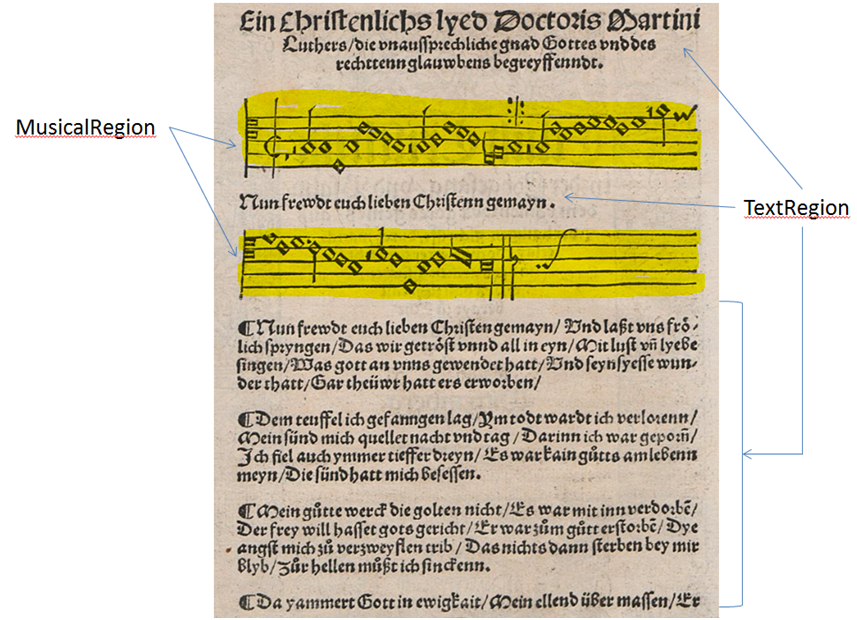
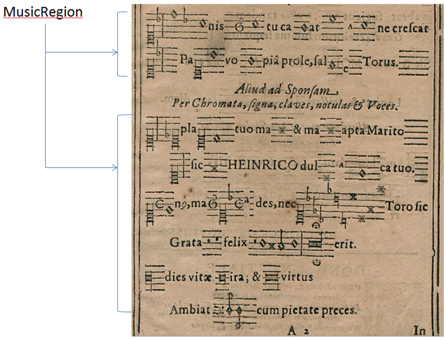

Notes (MusicRegion)
Musical notations of all kinds (historical, modern or neumes) are marked as such. If, in the case of songs, texts are below individual music staves and a clear separation is discernible, each system (also referred to as a stave) is marked as a stave region, the texts as a text region. However, if texts are integrated directly into bracketed staves, the text is not considered as such and the entire region is marked as a stave region.

